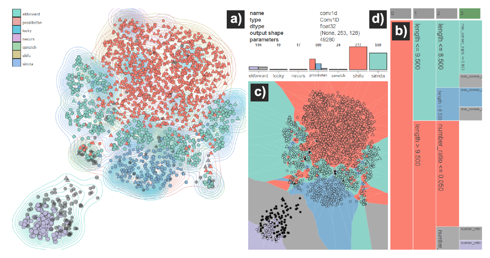

Interpretable Visualizations of Deep Neural Networks for Domain Generation Algorithm Detection
(opens in new tab)
Venue. VizSec (2020)
Materials.
DOI(opens in new tab)
PDF(opens in new tab)
Abstract. Due to their success in many application areas, deep learning models have found wide adoption for many problems. However, their blackbox nature makes it hard to trust their decisions and to evaluate their line of reasoning. In the field of cybersecurity, this lack of trust and understanding poses a significant challenge for the utilization of deep learning models. Thus, we present a visual analytics system that provides designers of deep learning models for the classification of domain generation algorithms with understandable interpretations of their model. We cluster the activations of the model’s nodes and leverage decision trees to explain these clusters. In combination with a 2D projection, the user can explore how the model views the data at different layers. In a preliminary evaluation of our system, we show how it can be employed to better understand misclassifications, identify potential biases and reason about the role different layers in a model may play.
Link to this page: